|
|
HELP FIND THE FOLLOWING LOCATIONS
PAGE 26
THE BARON: There's Someone Close Behind You (Roy Baker: December 1965)Unknown 1 - Mannering arrives at The Worker’s Hall and finds a concert taking place. Thankfully the police are not too far behind.
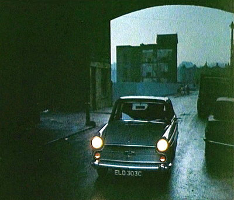
Unknown 2 - All three cars approach the site of the ambush.
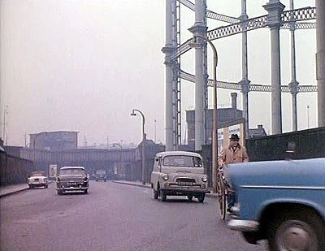
 Camley
Street looking towards the Goodsway
junction but needs confirmation.
Camley
Street looking towards the Goodsway
junction but needs confirmation.
THE BARON: The
Edge of Fear
Unknown 1 - Mannering
thinks he is being followed.
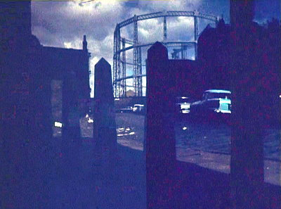
 Camley
Street looking towards the Goodsway
junction?
Camley
Street looking towards the Goodsway
junction?
Pancras Way, London NW1 - Mannering knows he is being followed.
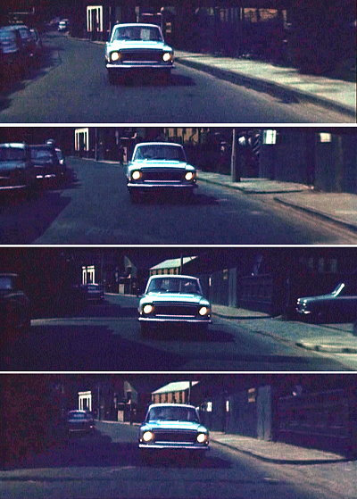
Unknown 2 - Mannering lures his tail into a dead end street
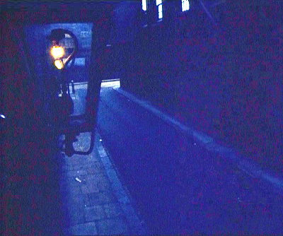
THE BARON: Red
Horse, Red Rider
(John Moxey:
July/August 1965)
F57: Gordonbush House (formerly
Egypt End) on
Egypt Lane, Farnham Common - The Baron
arrives at the home of Olmira.
They have been followed by Salar
and Shamir who wait outside in a Jeep. After a while they
drive a little
further down the road.
(Identified by Geoff Dodd, May 2021)
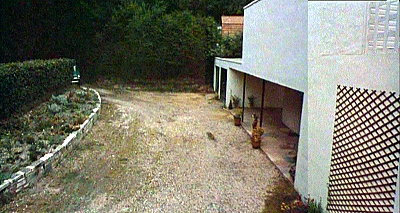
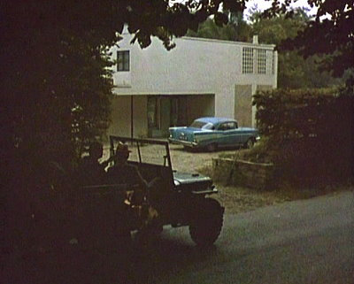
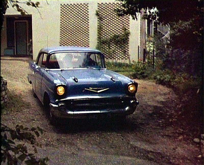
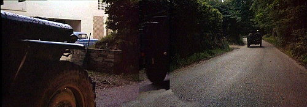
Unknown 1 - The Baron drives away from the home of Olmira with the four horsemen in his possession.
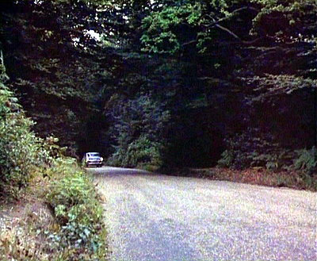
Unknown 2 - Using the tracking device Salar and Shamir drive their Jeepout of its hiding place to follow The Baron and Savannah.
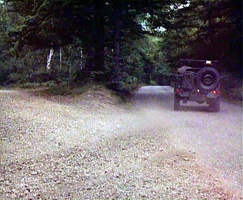
Unknown 3 -Miros knows the area and finds a place for Mannering and Savannah to wait until nightfall to cross the border into Greece.
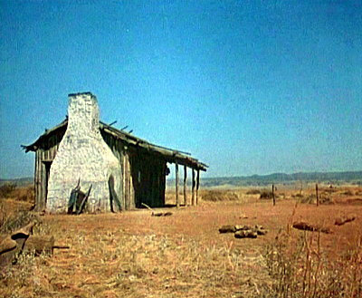
The Golan Heights, Hula valley, Israel - Miros, Mannering and Savannah find themselves somewhere near the border of Khakaniaand Greece.Idenified by Sietse Postma, April 2024
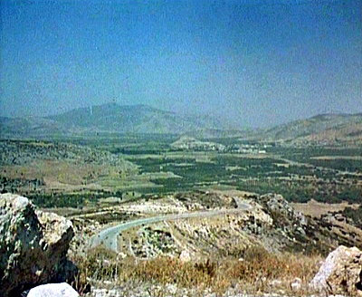
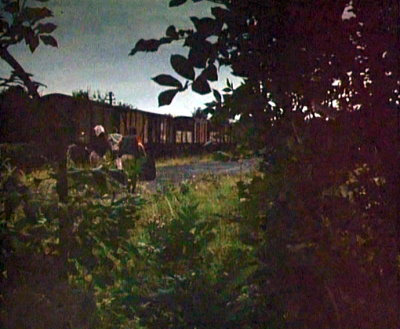
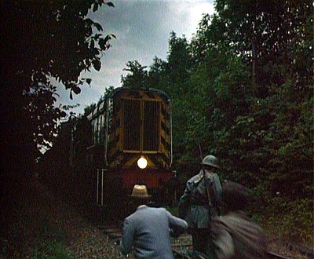
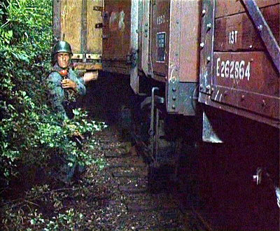
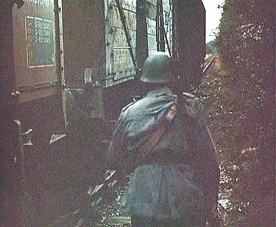
Unknown 6 - Miros, Mannering and Savannah watch as a truck unloads soldiers near to where they intend to cross the border into Greece.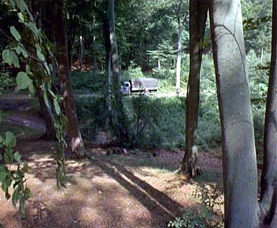
 Neither
the soldiers nor the truck are seen at any
other time in the episode.
Neither
the soldiers nor the truck are seen at any
other time in the episode.
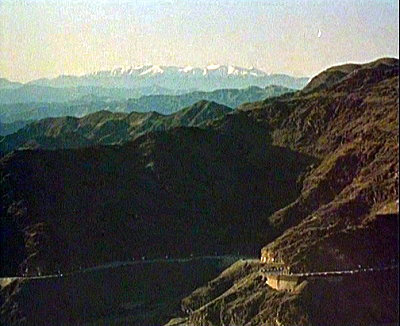
Think you know a spot? Need a bigger image? Email me.
< Previous | Index | Avengerland | Next >
Copyright © 2021 Anthony R. McKay